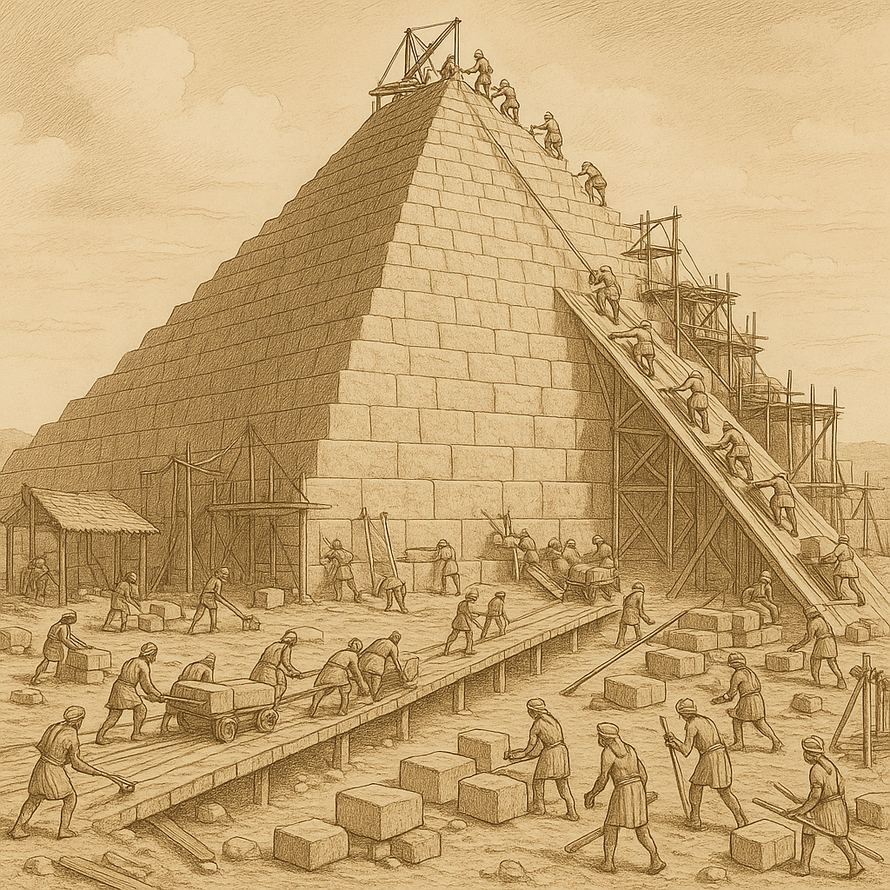

4. TIPOS DE ESTRUCTURAS ARTIFICIALES
Hay muchos tipos de estructuras. Una forma sencilla de clasificarlas es por su forma o los elementos que predominan en ellas. Siguiendo este criterio, podemos encontrarnos con estructuras masivas, entramadas, abovedadas, trianguladas y colgantes.
1. Estructuras Masivas

¿Qué son? Estructuras en las que predomina una gran concentración de material.
- Características: Macizas, estables y muy pesadas; dejan poco espacio libre en su interior
- Materiales: Granito, mármol o hormigón (resistentes a compresión)
- Ejemplos: Pirámides egipcias y mayas, templos griegos, presas de embalses, murallas y diques
2. Estructuras Abovedadas

¿Qué son? Predominan los arcos, bóvedas o cúpulas como elementos de sujeción y soporte.
- Elementos clave:
- Arco: Parte de estructura en forma de curva
- Bóveda: Sucesión de varios arcos
- Cúpula: Bóveda con forma semiesférica
- Ventaja: Soportan fuertes esfuerzos de compresión y cubren grandes espacios
- Refuerzo: Necesitan contrafuertes para reforzar los muros laterales
- Ejemplos: Teatros, circos y acueductos romanos, iglesias, catedrales, mezquitas, túneles
3. Estructuras Entramadas

¿Qué son? Formadas por perfiles de madera, acero u hormigón que se entrecruzan entre sí.
- Elementos estructurales: Vigas, pilares (o columnas) y cimentación
- Ventaja: Disminución de peso respecto a estructuras masivas, permitiendo mayor altura
- Tipos de cimentación:
- Zapatas: Para terreno firme
- Losas y pilotes: Para terreno blando
- Ejemplos: Edificios modernos (se cubren con ladrillos o cristal después de colocar la estructura)
EXPERIMENTA
- Coge palillos o pajitas y colócalos sueltos
- Después aplica fuerza con la mano
- Haz un entramado cruzado y repite la operación
¿Cuál es más resistente? El entramado cruzado es mucho más resistente.
4. Estructuras Trianguladas

¿Qué son? Se forman con la unión de muchos triángulos, construyendo redes planas o espaciales.
- Principio: Cada triángulo soporta esfuerzos de tracción o compresión, equilibrándose la estructura
- Ventaja: Pueden crecer todo lo que se desee manteniendo resistencia y ligereza
- Materiales y nombres:
- Madera: Se llaman cuchillos
- Acero: Se llaman cerchas
- Características: Muy resistentes y ligeras (están huecas)
- Ejemplos: Torres de alta tensión, grúas, plataformas petrolíferas, estadios deportivos, algunos puentes
5. Estructuras Colgantes

¿Qué son? Sustentadas por cables o perfiles sujetos a elementos de soporte.
- Elemento predominante: Tirantes (sometidos a esfuerzos de tracción)
- Componentes de puentes colgantes:
- Tablero: Metálico para paso de vehículos
- Pilares: De hormigón con cimientos muy profundos
- Tirantes: Sujetan el tablero y se amarran desde las orillas
- Ventaja: Permiten puentes más largos con menos pilares intermedios
- Aplicación: Especialmente útil para atravesar ríos anchos, bahías, etc.
- Característica: Si los cables se rompieran, el puente se hundiría
Resumen comparativo
| Tipo | Material principal | Esfuerzo principal | Características | Ejemplos |
|---|---|---|---|---|
| Masiva | Piedra, hormigón | Compresión | Pesada, estable, poco espacio interior | Pirámides, presas |
| Abovedada | Piedra, ladrillo | Compresión | Cubren grandes espacios | Catedrales, túneles |
| Entramada | Acero, madera, hormigón | Flexión/compresión | Ligera, permite altura | Edificios modernos |
| Triangulada | Acero, madera | Tracción/compresión | Muy resistente y ligera | Torres eléctricas, grúas |
| Colgante | Cables de acero | Tracción | Salva grandes distancias | Puentes colgantes |
¿Por qué es importante conocer estos tipos?
Entender los diferentes tipos de estructuras artificiales te ayuda a:
- Reconocer el tipo de estructura que ves en tu entorno
- Comprender por qué se eligió esa forma para esa función específica
- Apreciar la ingeniería detrás de cada construcción
- Aplicar estos conocimientos en tus propios diseños y proyectos
¡Observa tu entorno y trata de identificar qué tipo de estructura es cada edificio, puente o torre que encuentres!